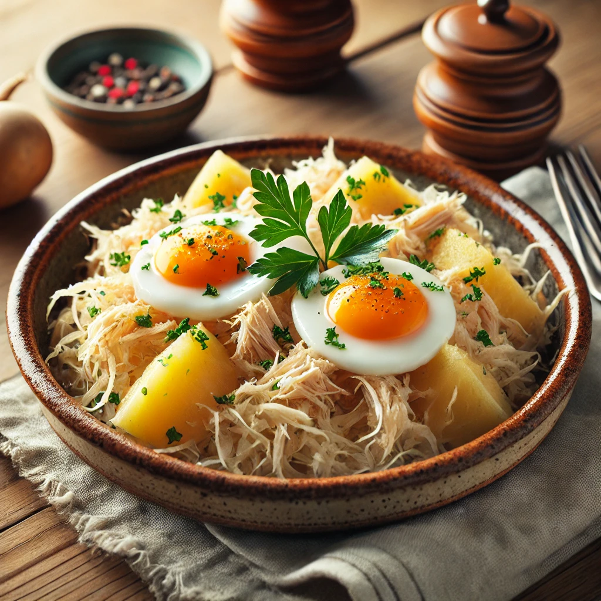
Bacalhau à Brás
Un plato de bacalao desmenuzado con patatas paja y huevo revuelto, todo perfectamente sazonado. Originario de Lisboa, este plato es conocido por su equilibrio entre la textura crujiente de las patatas y la suavidad del bacalao. Su sencillez lo convierte en un favorito tanto en hogares como en restaurantes, siendo un ejemplo perfecto de la cocina casera portuguesa.
Se suele acompañar con una ensalada ligera y un buen vino blanco portugués, como el Vinho Verde. Este plato también simboliza la versatilidad del bacalao, un ingrediente estrella en la gastronomía portuguesa.
Saber más
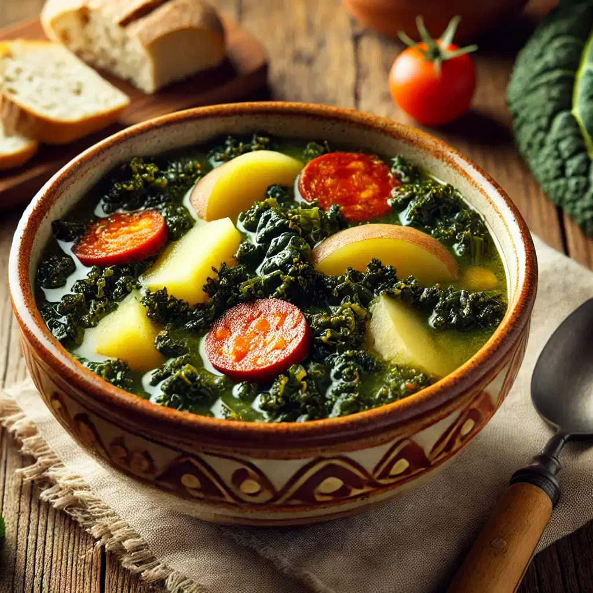
Caldo Verde
Una sopa reconfortante hecha con col rizada, patatas y chorizo, originaria del norte de Portugal. Se sirve tradicionalmente en festivales y reuniones familiares, acompañada de pan de maíz. Es un plato sencillo pero lleno de sabor, que refleja la esencia de la comida portuguesa.
El Caldo Verde es especialmente popular durante las festividades de San Juan y otras celebraciones en el norte del país. Su bajo costo y alto valor nutritivo lo convierten en un alimento esencial en muchas mesas portuguesas.
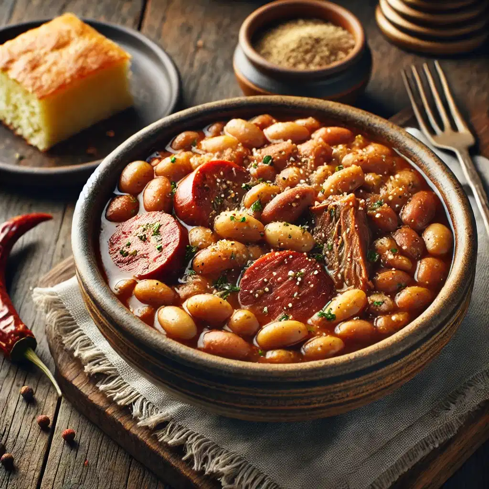
Feijoada à Transmontana
Un guiso contundente con alubias, carne de cerdo y chorizo, típico de la región de Trás-os-Montes. Este plato simboliza la riqueza gastronómica de las áreas rurales de Portugal, donde se aprovechan al máximo los recursos disponibles.
La Feijoada se sirve a menudo en celebraciones familiares y eventos especiales, acompañada de un buen vino tinto. Es un plato que representa la tradición y el sabor robusto de la cocina portuguesa.

Sardinhas Assadas
Sardinas asadas a la parrilla, un clásico de las fiestas populares en Portugal. A menudo se sirven con pimientos asados y pan rústico durante las festividades de San Antonio. Este plato es una celebración del sabor fresco del mar y la tradición portuguesa.
Las Sardinhas Assadas son un elemento central en las fiestas de verano y simbolizan la conexión de Portugal con su extensa costa. Su aroma característico es inconfundible en las calles durante las festividades.
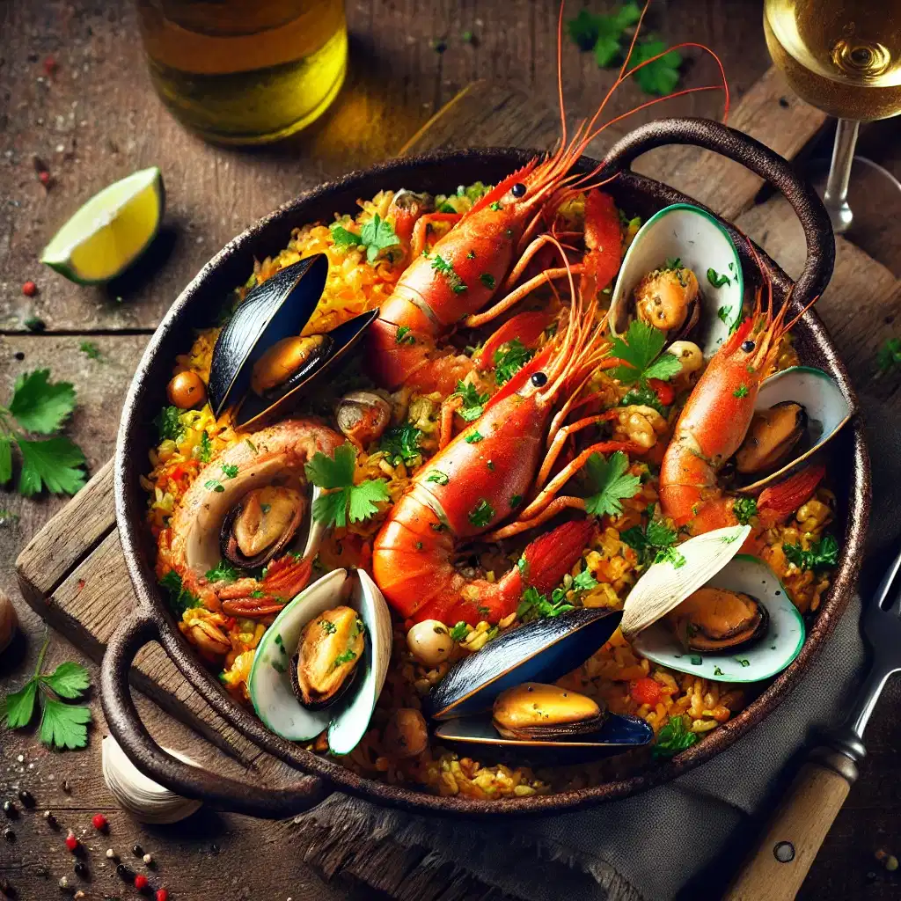
Arroz de Marisco
Un arroz caldoso lleno de sabor, preparado con mariscos frescos como gambas, almejas y cangrejo. Es un plato típico de las regiones costeras, especialmente en el Algarve, y una muestra de la abundancia de mariscos en Portugal.
El Arroz de Marisco es ideal para compartir en reuniones familiares o con amigos, acompañado de un vino blanco fresco. Su preparación es un arte, equilibrando los sabores del mar con el arroz perfectamente cocido.

Francesinha
Un contundente sándwich de Oporto, relleno de carne, cubierto de queso y bañado en una salsa especial. Inspirado en los croques franceses, es ideal para acompañar con cerveza. Este plato es un símbolo de la ciudad de Oporto y una experiencia culinaria única.
La salsa, cuya receta varía según el chef, es el alma de la Francesinha. Este plato se sirve a menudo con papas fritas, lo que lo convierte en una comida completa y satisfactoria.
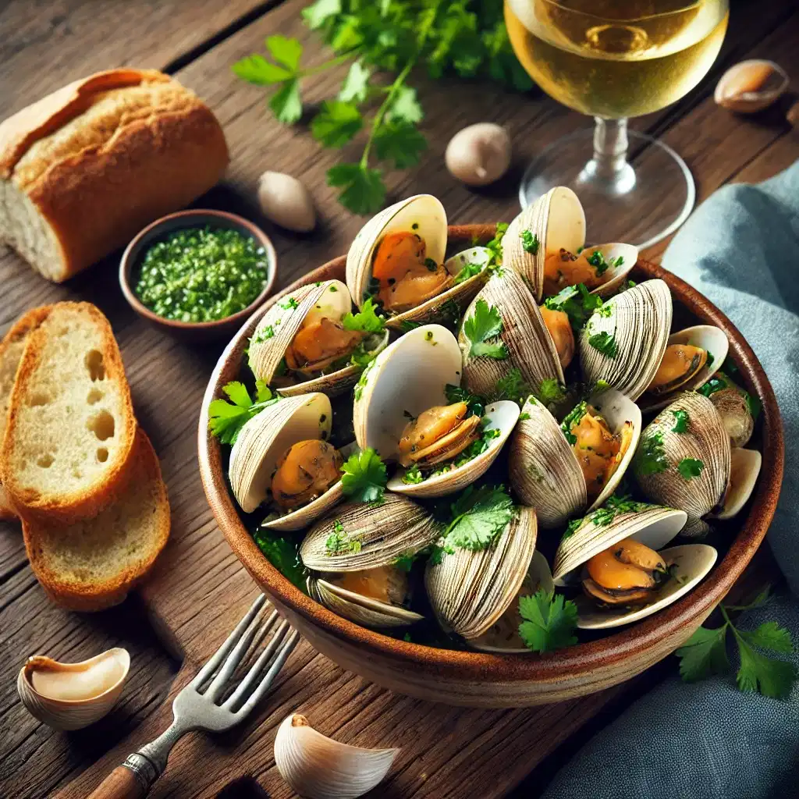
Amêijoas à Bulhão Pato
Almejas cocinadas con ajo, cilantro y aceite de oliva, un aperitivo tradicional delicioso. Este plato lleva el nombre de un famoso poeta portugués del siglo XIX. Es una entrada ligera y sabrosa que captura los sabores frescos del mar.
Se suele servir con pan crujiente para mojar en la deliciosa salsa. Es un plato que destaca por su simplicidad y su capacidad de realzar los sabores naturales de las almejas.
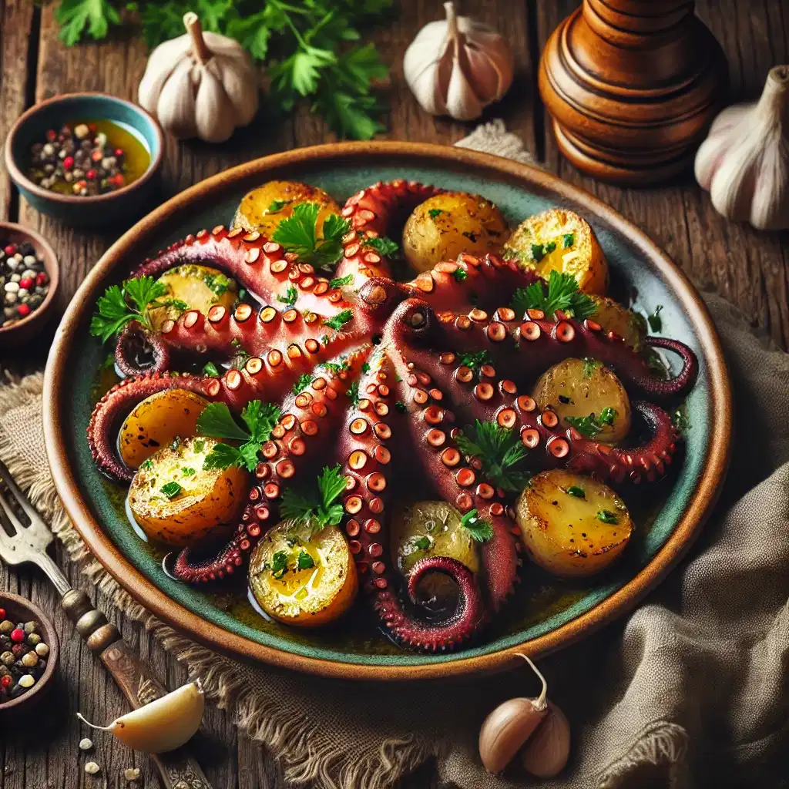
Polvo à Lagareiro
Pulpo asado al horno con aceite de oliva, ajo y patatas, un manjar sencillo pero exquisito. Su preparación resalta los sabores naturales del pulpo fresco, convirtiéndolo en una delicia para los amantes del marisco.
Este plato es una muestra perfecta de la cocina portuguesa, donde los ingredientes frescos y la preparación sencilla son clave. Se sirve comúnmente en restaurantes costeros y es apreciado por su sabor y textura.
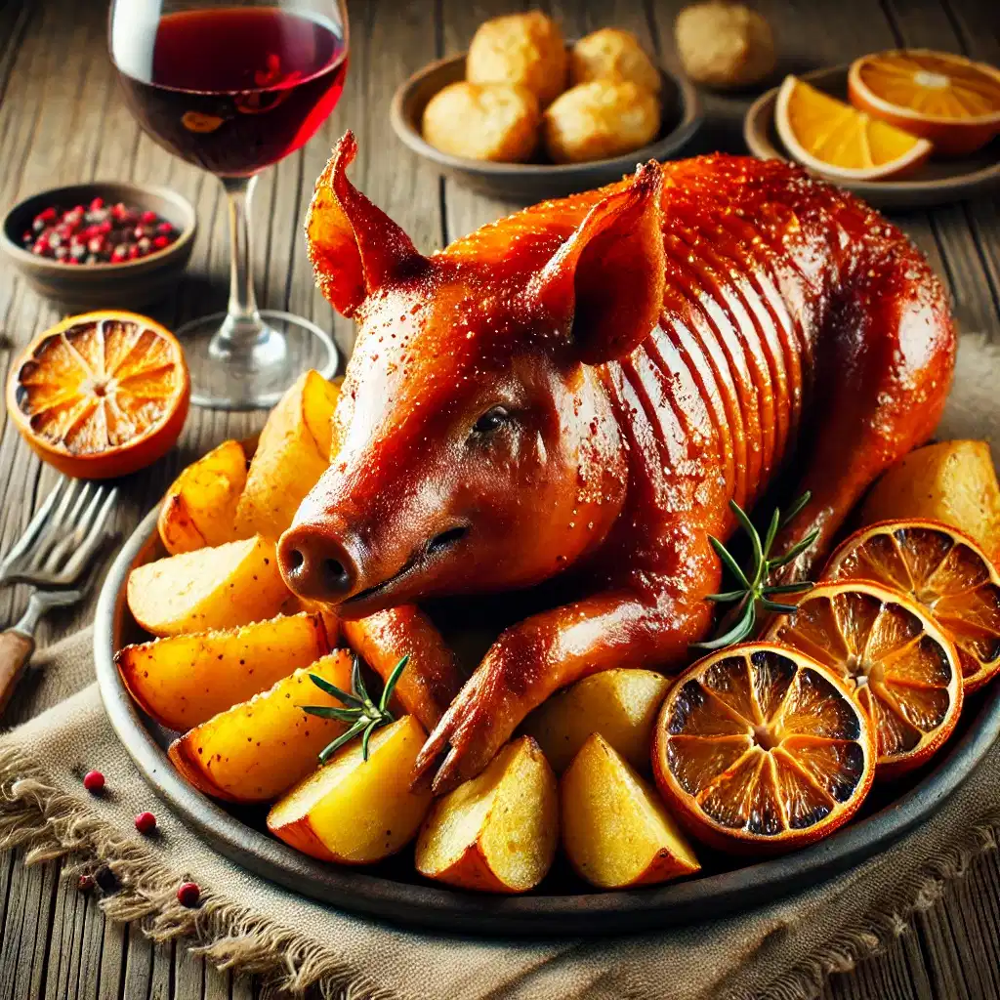
Leitão à Bairrada
Un cochinillo asado crujiente, especialidad de la región de Bairrada. Este plato se cocina lentamente para lograr una piel crujiente y carne jugosa, siendo uno de los platos más emblemáticos de Portugal.
El Leitão se sirve a menudo con patatas fritas y ensalada, acompañado de un vino espumoso de la región. Es un plato festivo que se disfruta en celebraciones y ocasiones especiales.
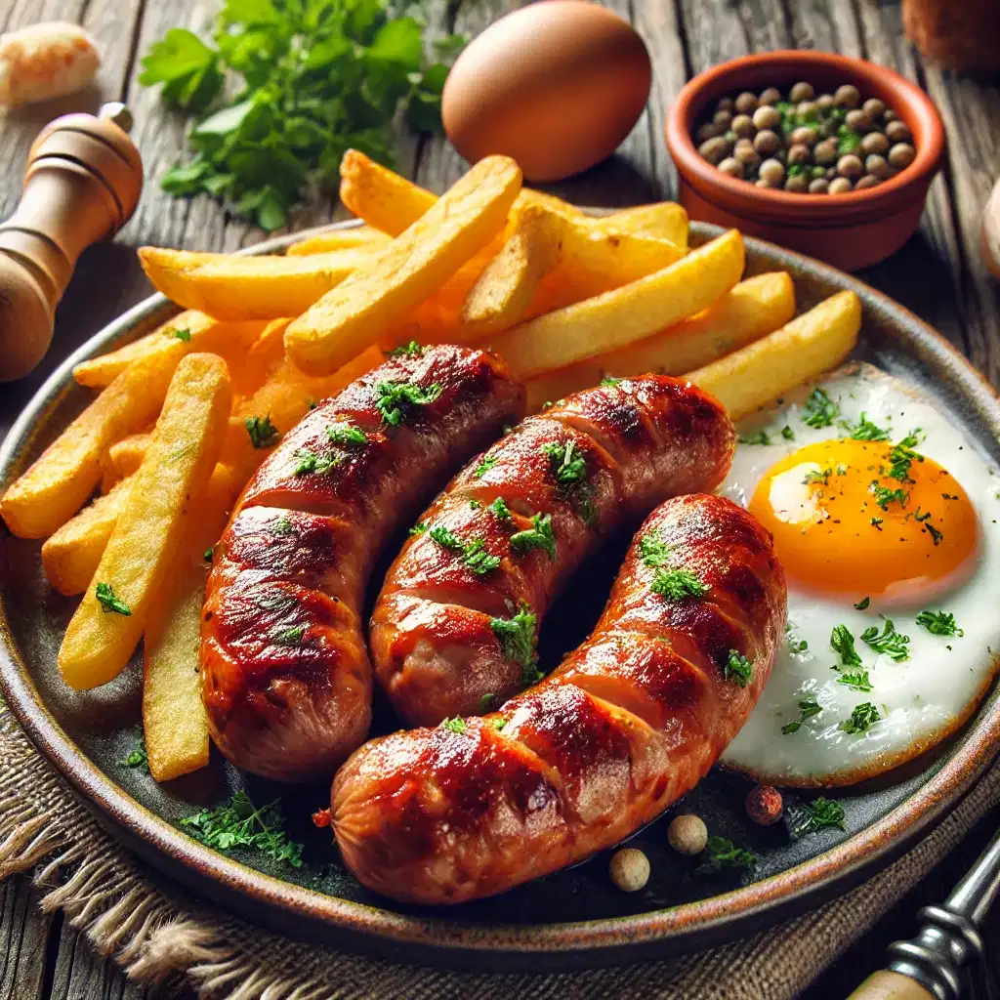
Alheira de Mirandela
Un embutido tradicional de Mirandela, hecho con carne de ave y pan. Originalmente creado por los judíos sefardíes como alternativa al chorizo de cerdo, este embutido tiene un sabor único y una rica historia.
Se suele freír y servir con huevo frito y papas fritas, siendo una comida reconfortante y llena de sabor. Es un ejemplo perfecto de cómo la cocina portuguesa refleja su historia y cultura.

Cozido à Portuguesa
Un estofado de carnes, embutidos y verduras, una comida reconfortante para días fríos. Este plato varía según la región, incorporando ingredientes locales, y es un símbolo de la cocina portuguesa tradicional.
El Cozido es una comida abundante que reúne a las familias, siendo un plato central en muchas mesas durante el invierno. Su preparación y presentación varían, pero su esencia sigue siendo la misma: una celebración de sabores caseros.
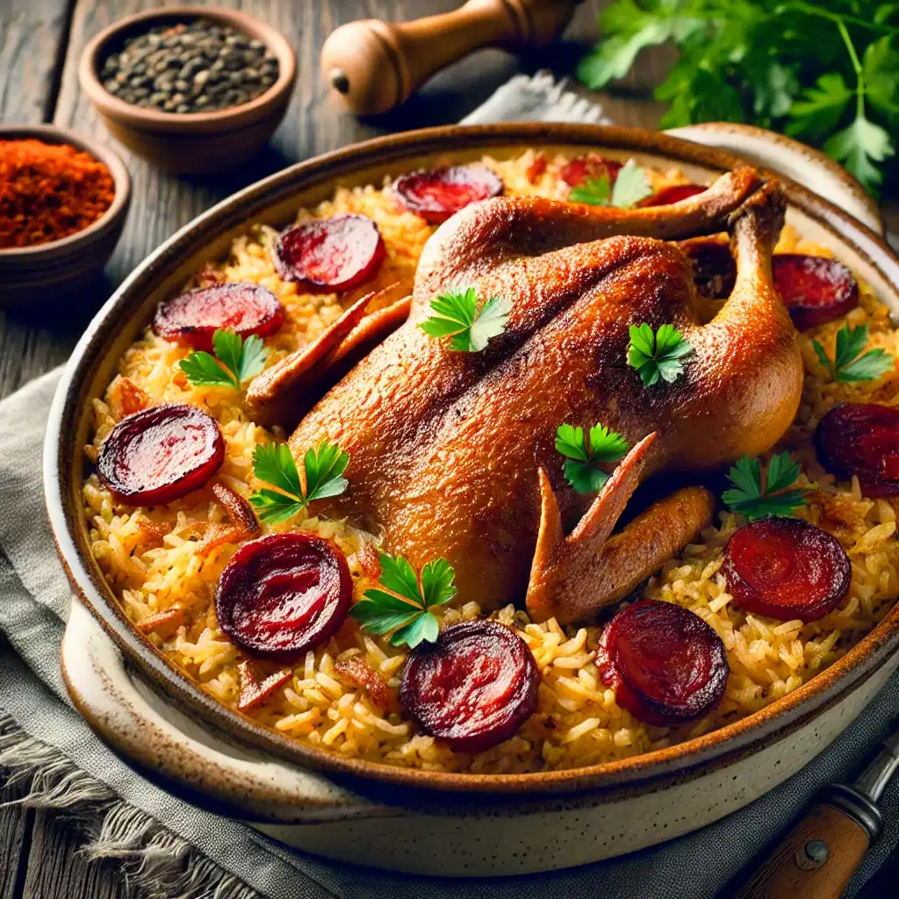
Arroz de Pato
Un arroz al horno con pato desmenuzado y una capa crujiente de chorizo. Se considera un plato festivo, servido a menudo en celebraciones familiares. Su combinación de sabores y texturas lo convierte en un favorito de muchas generaciones.
El Arroz de Pato se suele acompañar con una ensalada fresca y vino tinto, creando una comida equilibrada y deliciosa. Es un plato que refleja la habilidad de los portugueses para realzar los sabores naturales de los ingredientes.
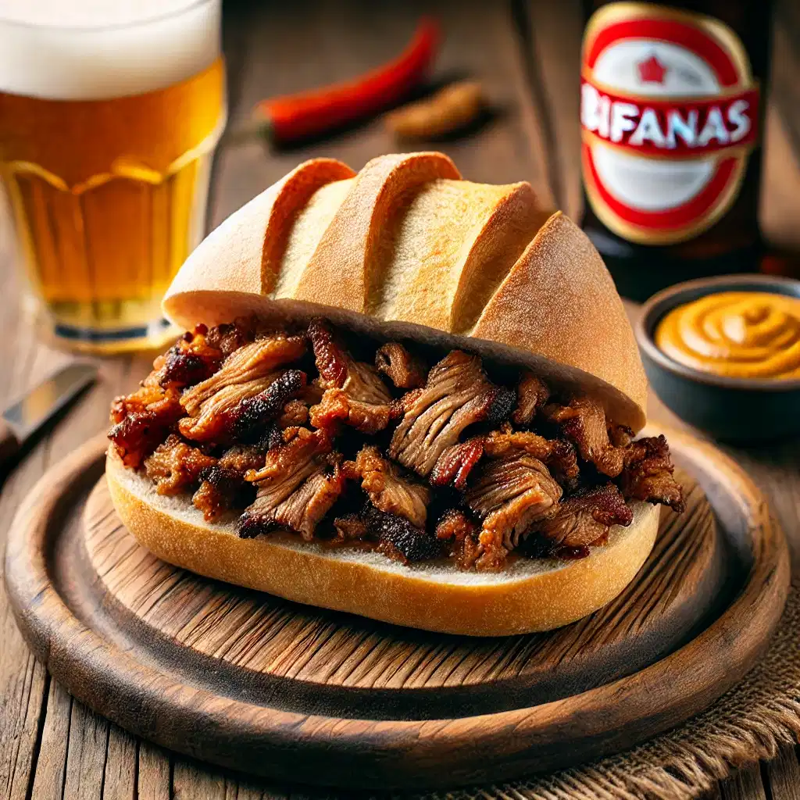
Bifanas
Un delicioso bocadillo de carne de cerdo marinada en especias. Son un clásico de la comida callejera en Portugal, perfecto para acompañar con cerveza. Las Bifanas son sencillas pero llenas de sabor, representando la esencia de la cocina portuguesa.
Se pueden encontrar en cualquier feria o evento popular, siendo un alimento rápido y satisfactorio. La carne tierna y bien sazonada es el alma de este bocadillo icónico.
Pastéis de Bacalhau
Croquetas de bacalao crujientes por fuera y suaves por dentro. Son un acompañamiento ideal para ensaladas o como aperitivo, y su popularidad trasciende las fronteras de Portugal.
Los Pastéis de Bacalhau se preparan con una mezcla de bacalao, patatas y especias, logrando una textura única. Son perfectos para compartir en cualquier ocasión.
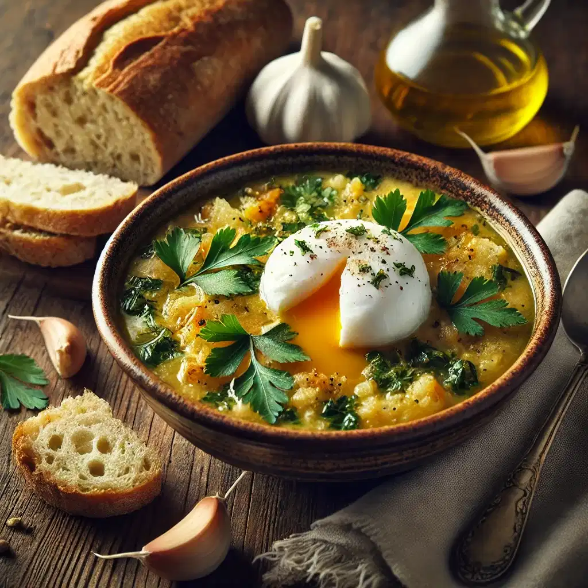
Açorda à Alentejana
Una sopa sencilla hecha con pan, ajo, cilantro y huevo escalfado. Es un plato típico del Alentejo, conocido por su simplicidad y sabor. La Açorda refleja la habilidad portuguesa de crear platos deliciosos con ingredientes básicos.
Se sirve comúnmente en un cuenco rústico, acompañado de aceitunas y un buen vino blanco. Su origen humilde no impide que sea considerado un tesoro de la gastronomía portuguesa.
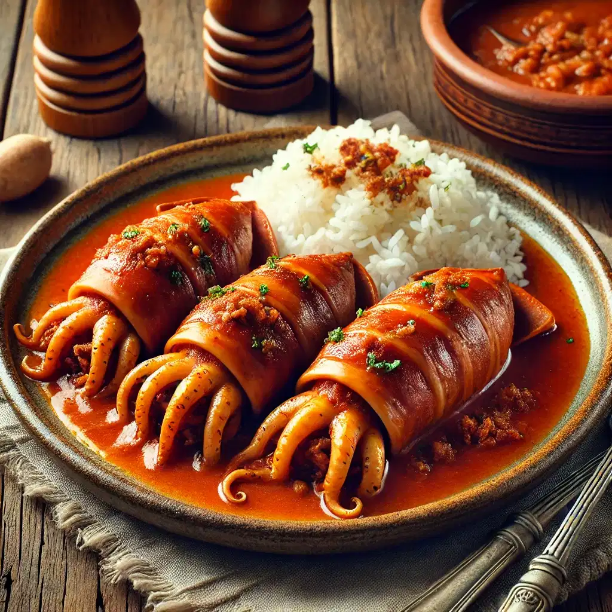
Lulas Recheadas
Calamares rellenos de un sabroso mix de carne y especias, cocinados en salsa de tomate. Perfecto para quienes aman los sabores del mar, este plato es una joya de la cocina portuguesa.
Las Lulas Recheadas son ideales para una cena especial, acompañadas de arroz blanco o una ensalada fresca. Su sabor rico y su presentación atractiva las hacen destacar en cualquier mesa.
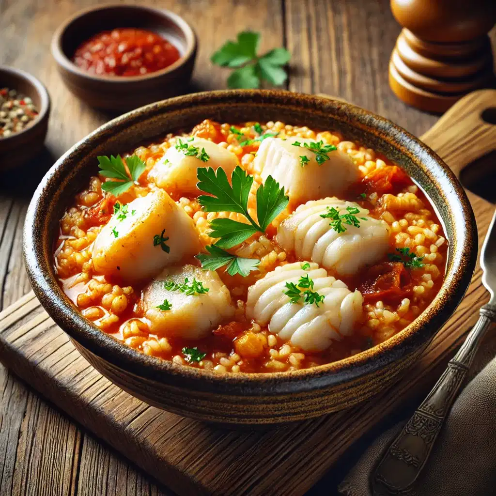
Arroz de Tamboril
Un arroz caldoso con rape, sazonado con especias tradicionales. Su textura y sabor lo convierten en un favorito de las zonas costeras. Este plato muestra la riqueza del mar en cada bocado.
El Arroz de Tamboril es una elección perfecta para los amantes del pescado, servido caliente y con hierbas frescas como decoración. Su preparación requiere paciencia, pero el resultado vale la pena.
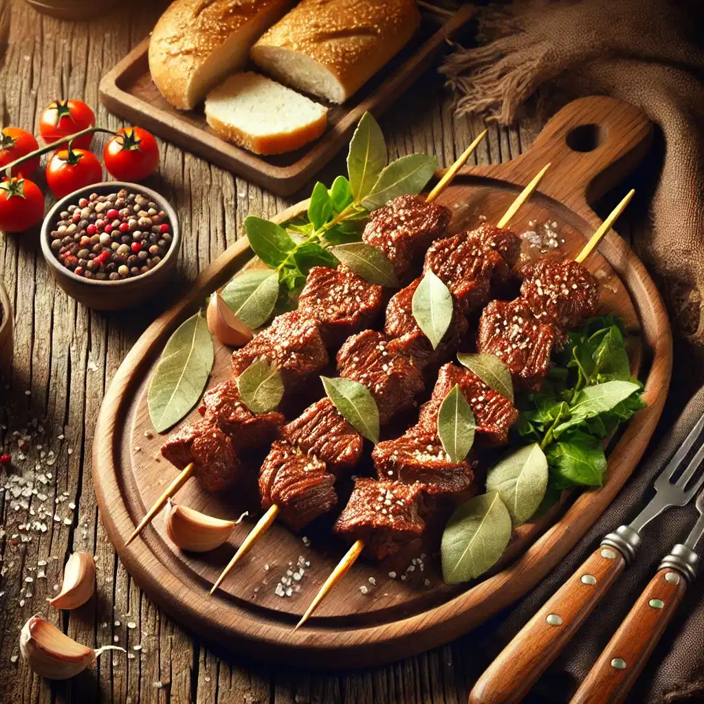
Espetadas de Madeira
Brochetas de carne marinada en ajo y laurel, típicas de Madeira. A menudo se cocinan sobre brasas para realzar su sabor, convirtiéndolas en una experiencia culinaria única.
Las Espetadas se sirven con pan de maíz o ensalada, siendo un plato que refleja la herencia gastronómica de Madeira. Su aroma y sabor son inconfundibles.
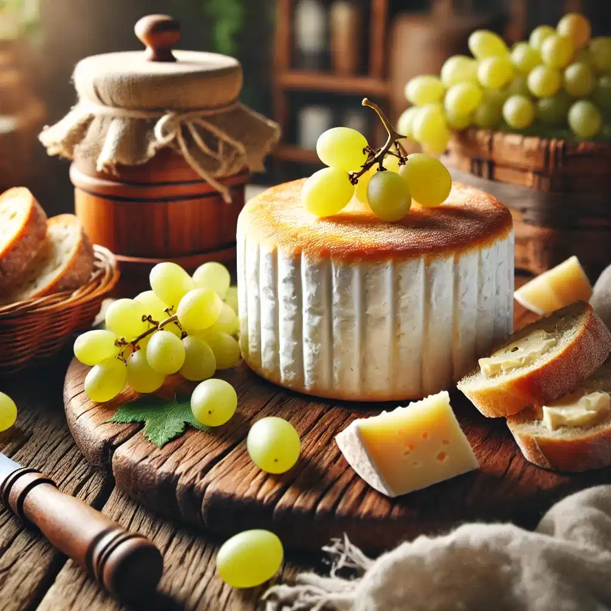
Queijo da Serra
Un queso cremoso y suave, considerado uno de los mejores de Portugal. Hecho con leche de oveja en la región de la Serra da Estrela, es un verdadero deleite para los amantes del queso.
El Queijo da Serra se disfruta mejor acompañado de pan fresco y un vino tinto. Es un ejemplo del arte tradicional de la quesería en Portugal.
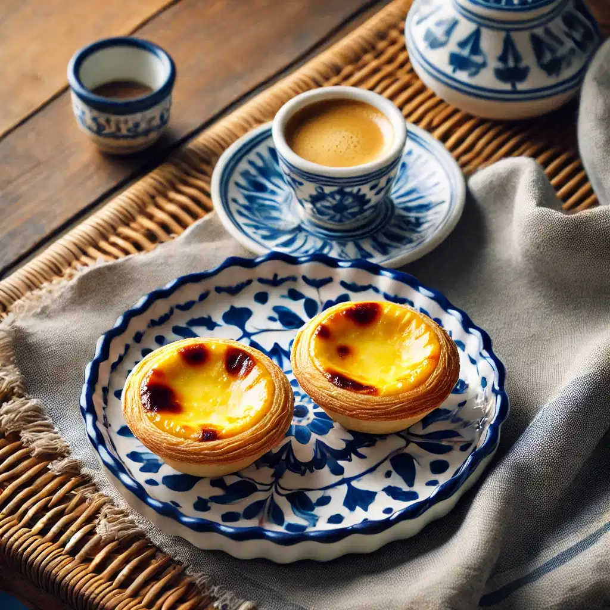
Pastéis de Nata
Famosas tartaletas de crema, dulces y perfectas para acompañar con café. Originarias de Lisboa, son conocidas en todo el mundo por su sabor inigualable y textura crujiente.
Los Pastéis de Nata son una experiencia obligatoria para cualquier visitante en Portugal, y su receta sigue siendo un secreto celosamente guardado por los pasteleros.